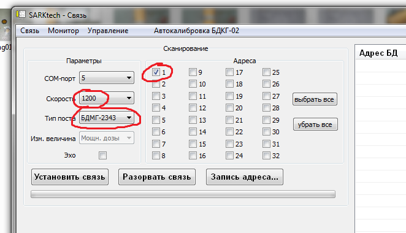

БДМГ-АТ2343. Ремонт
Если не подключается
Защита от статики
Посмотреть работу каждого счетчика
Шаблон для распечатывания коэффициентов
Если не прошел линейку
Как сделать автокалибровку
Как сделать проверку "пультом"
Как снять показания с "ошейником"
Паспорт настройки
Шаблон протокола поверки
Защита от статики
Посмотреть работу каждого счетчика
Шаблон для распечатывания коэффициентов
Если не прошел линейку
Как сделать автокалибровку
Как сделать проверку "пультом"
Как снять показания с "ошейником"
Паспорт настройки
Шаблон протокола поверки
- Сделать запись в журнале ремонта (БДМГ-АТ2343)
- Найти паспорт ремонта, если нет — завести новый Подключается через такой переходник:
- Подключиться через SARKtech (если не подключается) 
- Инд. данные — проверить, совпадают ли номера, если нет — исправить
- Адрес у всех БДМГ всегда 1
- Время интегрирования — поставить значение 255
- Очистить, затем выбрать:
- Инд данные
- Время интегрирования
- Пороги
- Коэффициент 1
- Коэффициент 2
- Коэффициент 3
- Также можно смотреть скорость счета по каждому счетчику раздельно — это необходимо для выявления неработающего счетчика ( Посмотреть работу каждого счетчика)
- Скопировать всё, вставить в WORD и распечатать (на одном листе помещаются данные от двух БД (шрифт - 12) — есть шаблон)
- Данные подшить в паспорт ремонта
- В маршрутном листе сделать отметку с датой напротив АТ130 и АТ110
- Отдать на линейку
После того, как БД вернется с линейки (и что делать, если не прошел линейку) :
- Если блок разбирается, заодно сделать защиту от статики
- Сделать автокалибровку
- Сделать проверку "пультом"
- Снять показания с "ошейником"
- Заполнить отчет о ремонте (дефекты, принятые меры)
- Отдать отчет на склад для выписки накладных(если что-нибудь менялось)
- Если нужно, сделать протокол поверки (образец)
- В отчете о ремонте отметить:
- "Диагностика ..."
- Если поверялся — "подготовка к гос. поверке" и "Гос поверка"
- Поставить "время инт" — 40
- Проверить адрес блока, на всех БДМГ должен быть 1
- Готово